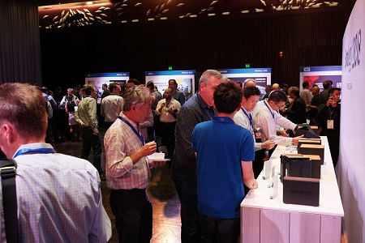

Synology
2018
Sydney
For the company's annual product launch and user gathering event in Australia, I worked with various teams to deliver an unforgettable event experience.
Background
Synology 201x event is the annual user and product launch event series of Synology Inc. In 2017, the Synology 2018 events have taken place in over 10 countries around the world. Each event series gathers hundreds of business and home users, as well as sales partners from respective regions, to witness the latest innovations, have a sneak peek at the future development roadmap, and interact with Synology developers and other users.
Role
As the organizer of Synology 2018 Sydney, I was responsible for localizing, coordinating, and executing the Synology 2018 event series for the Australian market. For this project, I also worked with the company’s visual design team, other marketing specialists, and a Sydney-based event agency to create an unforgettable experience.
Challenges
1. Short attention span
Based on questionnaire results in our previous events, Friday night will render the best turnout rate for a celebrative event like Synology 2018. However, participants would be arriving at the venue after working all day, and would thus most likely have shorter attention span at an evening event as compared with a morning or afternoon one. In the worst case, they may be too tired or disengaged that they wanted to leave early. Keeping their attention and engagement would therefore be a great challenge.
2. Various attendee backgrounds
Synology 2018 would be receiving attendees from various backgrounds -- participants could be representatives from local sales channels, tech media, vendor partners, and end users, which may be either business users or home users. The goal of the event was not only to introduce our latest solution roadmap, but also to facilitate interaction between our users, further strengthening the Synology community. Therefore the new products and solutions may not be of everyone’s interest, the event should still be able to keep each participant entertained.
Solution

1. Reduced session duration
In order to ensure the messages during the event can be effectively delivered to the attendees, we have reduced event duration to three hours, as opposed to four hours in the previous year. In addition, three food stations were situated in the venue to provide early arriving guests energy for the upcoming presentations. A 20-minute break was also inserted between the two main presentation sessions. This way, participants can take the chance to digest the presentation while interacting with engineers at the demo booths for hands-on experience of the new solutions introduced previously.
2. Additional entertainment
To keep the audience entertained throughout the event and to retain as many attendees as possible until the very end of the event, we have created a series of activities alongside with the main show sessions. These include two social media sharing and event questionnaire activities with exclusive giveaways, as well as a total of eight demonstration and display booths which attendees can visit. Additionally, to provide a facilitative atmosphere for business networking and user interaction, alcohol was also offered with roaming service. Lastly, a lucky draw session was included at the very end of event to encourage our guests to stay until the event ends.
Results
The event went very successful. Not only did we have high turnout rate, but guests enjoyed the event as well. Some testimonials gathered from event questionnaire are shown below:
